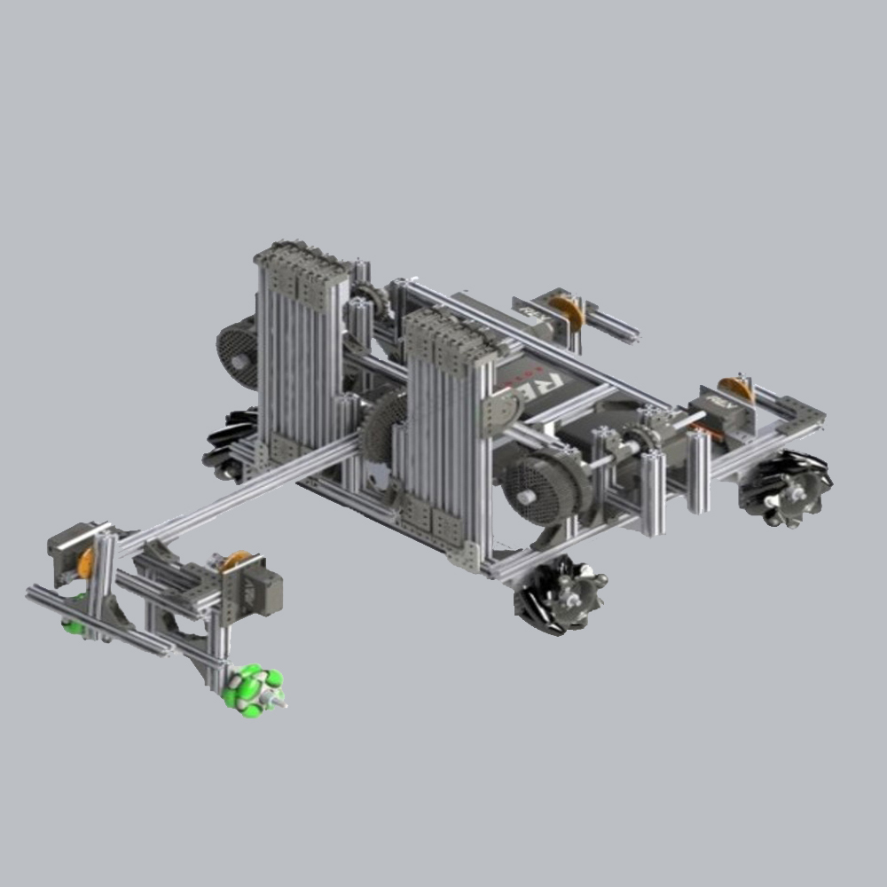

¿De que trata?

Este es el robot al que le guardo más cariño de todos los que he hecho, si bien no ha sido el mejor en el aspecto de la ingeniería fue el que mejor resultados dio por la gran sinergia entre el equipo de construcción y programación, de esa forma a pesar de no tener la mejor máquina a comparación de otros equipos, su funcionamiento era excepcional.
Este robot disponía de las siguientes características:
- Un chasis de llantas mecanum que le permitía moverse en todas las direcciones. (Adelante, Atras, Izquierda, Derecha, Rotaciones, Diagonales, Giros sobre diferentes ejes, etc.)
- Una librería que usaba cálculos trigonométricos para manejar el robot completamente derecho sin importar el desplazamiento de su centro de masa. ("LibTMOA" que viene de las siglas en inglés de: Trigonometric Mecanum Omnidriving Algorithm)
- Un brazo largo que comenzaba dentro del robot y se desdoblaba para poner alcanzar partes remotas del área de anotación, este brazo contenía una garra en la punta para poder tomar los elementos de juego que eran bloques de LEGO gigantes.
- Un elevador unido al brazo para poder formar torres con las piezas de LEGO gigantes que era el objetivo del juego.
- Un sistema de dos extrusiones metálicas para deplazar la plataforma de anotación por el campo de juego ya que eso daba puntos extra.
- Una baja altura para poder cruzar por debajo de un par de travesaños sin problema.
- Una gran variedad de sensores para conocer la posición del robot, el ángulo del brazo y cuando se tocan elementos periféricos del campo o los mismos elementos de juego.
Este robot fue campeón nacional y obtuvo 3 premios para representar a México en el mundial pero lamentablemente se canceló debido a la pandemia. Sin importar esto quiero destacar que la realización de este robot fue más importante que su gran desempeño, ya que durante estos meses aprendí a diseñar en 3D, producir renderizados de los diseños, mejoré mis habilidades de manufactura e incluso me introduje a la programación, pero sobre todo aprendí a gestionar y liderar proyectos y trabajar en equipo.